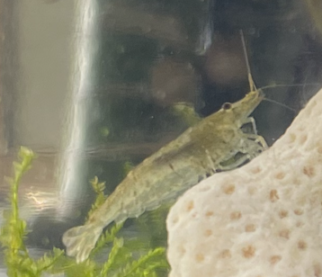
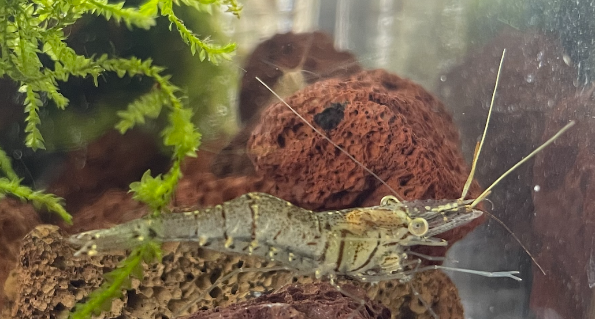
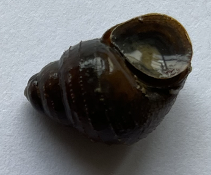
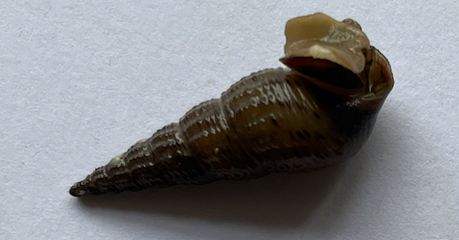
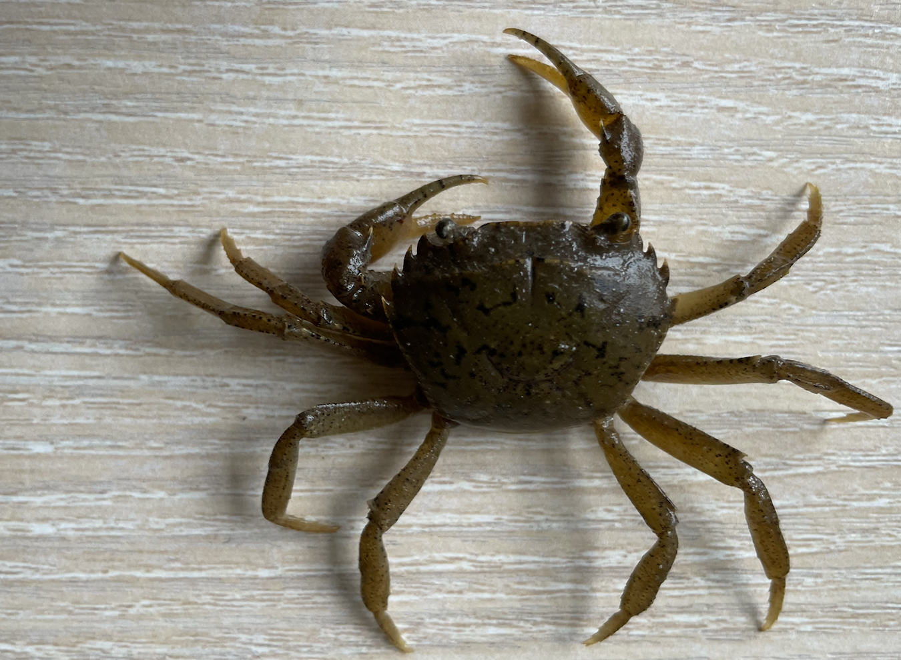

舅抓鱼
介绍
鱼类
红腹罗非鱼(Redbelly Tilapia)
-外来鱼-超强适应能力.png)
- 这种鱼广泛分布于非洲北半部和中东的淡水和微咸水域。在非洲、亚洲、澳大利亚和北美洲的其他地区，它已作为食用鱼或水生植物的对照物被引入。引入后，它们有时具有侵入性并威胁当地生态系统和物种。
- 罗非鱼通常生活于淡水中，可以存活于在湖、河、池塘的浅水中，也能生活于出海口、近岸沿海等不同盐分含量的咸水中。它有很强的适应能力，且对溶氧较少之水有极强之适应性，因此在许多地方成为入侵物种，并被列入世界百大外来入侵种名单。绝大部分罗非鱼是杂食性，常吃水中植物和碎物。此鱼在面积狭小之水域中亦能繁殖，在水稻田里亦能够生长。----维基百科
参考资料:
红腹罗非鱼 Redbelly Tilapia
维基百科-罗非鱼
青鳉鱼(Oryzias latipes)
-国际医学用鱼.png)
- 青鳉（学名：Oryzias latipes），又称米鳉，俗称稻田鱼、鱼目娘、米鳉、弹鱼，是青鳉属的一种。原中华青鳉被认为是日本青鳉亚种，现已分开。而台湾青鳉原被认为是青鳉，现已归类为中华青鳉。
- 生活于平地之池沼及河川水流缓慢处，水草茂盛处尤多。
- 青鳉较短的生命周期（7周繁殖一代）和对严苛环境（适应温度6－40 °C）的适应性使得其成为了一种模式生物, 青鳉鱼对有毒物质及药品耐性极低。
- 青鳉有吞食蚊子幼虫的习性，因此对灭蚊有一定的功效。
参考资料:
维基百科-青鳉
鳑鲏(Rhodeus sinensis)
-鳑鲏亚科-溪中精灵“鳑鲏”.png)
- 中华鳑鲏是鲤形目鲤科鳑鲏属鱼类，又称彩石鲋、菜板鱼、鳑鲏。
- 是鲤科鱼中的一种小型鱼类 ,广泛分布于我国除黑龙江水系外其它各流域的淡水水体中。
- 中华鳑鲏分布于朝鲜。在中国产于黄河、长江、瓯江、西江及福建省闽江、九龙江、晋江、木兰溪等水系。底栖鱼类。生活于江河、外荡、池塘、小溪及水田等静水、多草的水体中。植食性鱼类，主食藻类、水生植物碎屑等。4—6月繁殖，产卵于蚌内。1龄性成熟，怀卵量106—392粒。
中华鳑鲏为小型鱼类，体扁肉少，几无食用价值，常作为食肉性鱼类的饵料。可作观赏鱼。
参考资料:
中国原生鱼：鳑鲏亚科鱼类
色彩斑斓的中华鳑鲏
虾类
大和藻虾

更多信息：大和藻虾(Amano Shrimp)
青虾

螺
田螺

山坑螺

蟹
溪蟹
